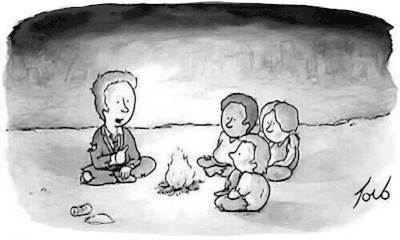

Such a man of Common Sense!
The following (since revision #7) is the 2nd draft which is
almost identical to the 1st gut-written but improved by English polishing, a better format with some fancy cartoons and links added where text-only references were initially put. Enjoy it, while I am working to further improve this document.
It is not about your opinion
These days I saw a few videos about the anti-system candidate running for Canada presidency. A matter that I do not care about because I am not feeling involved even by a little measure of it.
However, because I recognised that some statements in such electoral campaign have some sort of implications (spoiler: the candidate has been suggested to present itself as an anti-system candidate that it would fix the anti-reality system using the common sense) about a topic of many that I am interested in, I care to talk about
THAT topic.
A premise, necessarily
Before arguing about the opinions expressed in those videos, I wish to clarify a point even better between the two of them.
1.--If you are deeply involved in politics and you strongly believe that politics is “everything that matters” then everything I can say is a political statement even if I say that sky is blue and grass is green;
2.--If you have been educated in such a manner to believe that your god is the truth and other people's gods are fake, then it is irrelevant asking me if I believe in god rather than asking me to agree with you.
Again, the second is just a vicious way to implement the first point as “religion is everything that matters” and deciding to argue with me (or whoever other) from that point of view. Let me complete this scenario with the following:
3.--finance is a religion because it is supposed we believe in something without checking facts and without any degree of freedom in arguing about that but “in god we trust” printed on the $1 banknotes.
About the point #3, the Fugio cent's case is telling us about how far in the past the roots of this evilness are going deep:
Paper money is financial communism - the Fugio cent's case.
In short - whatever it matters for you – I am not arguing about it, but I am doing that old-fashioned border line human activity to find out a
description of reality that works or works better than
your unfactual opinion.
Please, notice that
F=ma the Newton first law of the Classic Mechanics cannot be assessed, not even discovered or falsified in a democratic way nor by consensus.
Despite this, as much as the speed reaches a small fraction of the light speed, that law starts to lose its grip on reality and hence reality is starting to “works” outside our comprehension while reality maintains a full grip on us.
This is a
very important premise because in front of a statement like
I believe in Thor being true god, and because of this I am protected by being lightening struck
or anything similar, I will never argue with you about Thor but suggesting you to prove your point in standing still on a mountain peak raising at the sky a long and sharply pointing conductive metal rod.
Most probably your “religion” will forbid that “obscene” way of acting otherwise people would experience factual proof of being wrong. It happens the same with finance, and here we are.
Biases, biases everywhere
A specific example of this premise concept can be found in (a) conceptual cognitive dissonance about AI and, in a broader manner, within the vast universe of the fantasy literature section
which like the Dante’s Hell can be entitled engraving the following statement “opinions vs reality: drop every hope you dare to get in here” above the entering door
we can also count in the (b) variety vs diversity or all the (c) fairy tales about X/XY chromosomes mass-distraction negative-value identity confusion.
(a) ·· Il problema sei tu, non l’AI in Italian, automatic English translation available.
(b) ·· I wish to be a wolf, accept it, written in English since the beginning.
(c) ·· Il grande inganno della diverità in Italian, automatic English translation available.
(d) ·· Neutrality vs biases for chatbots, written in English since the beginning
As a bonus example (d), also the AI-drive chatbots shows a similar misconceptional behaviour (or biases orthodoxy) when they are reduced in size by a process usually known as quantisation.
Who is the target reader
Not all the documents are written for everybody. This document is going to argument about
finance –
check an etymologically wise dictionary before giving for assessed the meaning of that word, please – and for who matters, reasoning in a rational and reality-functioning way.
The starting point is some declaration of a supposedly anti-system candidate for Canadian presidency which is sponsored by the suggestion that he can fix a broken system at its fundamentals using common sense.
Which is functional to sustain the pro status-quo because once he will get in charge, he will necessarily become part of the system he likes to change. Which is like to say:
I play at the blackjack table because I can beat the Casino by my skills. Sure!
Moreover, by definition, the Common Sense works when common {concept, activities, topic, etc. } are at stake. Trying to walk on the Moon using the
F=ma first law of Classical Mechanics will lead to such a great disaster that the Apollo 13 mission was a great achievement in comparison.
In this scenario we have to face with people who firmly believe that an infinitely inflationary fiat currency can fuel a financial system that can cope in a proper way of dealing with a global
economy –
check an etymologically wise dictionary before giving for assessed the meaning of that word, please – in which material goods and production are limited while natural resources are consumed much faster their rate of renovation.
By the way, it is not about believing in WHAT but about questioning ourselves about WHY and trying to provide us with a
rational-thinking answer that can withstand facts and can be functional in dealing with reality.
The evil root deep from the past
The evil root of the nowadays issues is written in books – not in stone – written by people which has pretty no any knowledge of the subsect because at that time no one has and for this reason won the honour to be the founding fathers of that topic
e.g. like Adam Smith, just for naming the most famous author of that time
For sake of fairness, those who wrote the critics
e.g. Karl Marx, just to naming the author most secretly read among those who live betting others people wealth at the Wall Street Casino
of the system based on their early founding fathers philosophy
while the concepts of economics and accounting were existing millennials before the branch of studies about such a topic like finance and economic were never formalised also because the University itself was invented few centuries before and took its time to spread around the Europe
were in the same pot cooking aka poorly educated about the subject with no any real-world experience
also because the Industrial Revolution was at its first beginnings hence nobody at that time could have matured any kind of real-world experience on which base its scientific consideration, therefore just philosophy can be written at that time
and both were educated and widely experienced in a manner that compared with the nowadays state-of-art on that subjects
including chaos, systems and games theories without forgetting the Nash equilibrium principle or the falsification of asymmetric information advantage, etc.
makes these founding fathers like a bunch of savages belonging to an untouched tribe who have lived all their life-time among monkeys in the forest.
Or to make a more shorter but still fashionable example, we can states that accepting paper money which has printed by thin air (aka legal currency without a material back-up or any fixed rate with a valuable commodity, aka golden standard or Bretton Wood agreement) in exchange of our properties, work and preciously limited life-timeis something that makes –
in comparison – the Native Americans
who were trading their hunting quarry in exchange for “the water made of fire” whiskey, get intoxicated and addicted to it at the point to misbehaving for having more
seems like an exclusive club of illuminati doing a great business richly profitable.
Just in case the previous explanation was too convoluted and historically richly based, compared to the example above, to be understood quickly. At this time, the idea that you still have not got a clue but still reading is quite fascinating.
Which is the reason because Casinos have no clocks displaying the time on the walls, nor windows to check outside and not even an easy way to get out plus some of them also offering free drinks, food and accommodation in their hotel, just in case you feel lucky.
The same with this paper, it is comfortable for me to be not excessively crystal clear but artisanally convoluted in crafting this piece of literature. Just because I am not in a peculiar urgency to check by person about the afterlife.
The gun has the safe
The most Common Sense convincing opinion explained by that candidate can be summarised as in the following:
The previous president and its government increased the public debt as much as all the other governments we had before in the history of our country. Moreover the monetary mass created by this way of doing is enlarged by multiple times the production. Something like +60% vs +4%. I will cure the system by adopting the Common Sense rule of not doing that any more but enforcing the public servants to follow the concept of a finite system of resources.
Whatever, let me just pointing out few details:
common sense works beautiful for common situations but currently the clothes drying machines in USA and also in Canada are sold with manuals which states “not suitable for pets” hence we can agree that the “common sense” is not such common as we lovely think
and moreover, common sense is very limited in time forecasting also. Providing an example which fit this case: as soon as the candidate will be the new president in charge, his living and health will be strongly under the control of anyone who is part of the system that he wish to reform with his opinion
the candidate opinion is not his opinion but the silly idea of an Italian university professor of Economics that wonder to win a Nobel prize for having saved a rootly-rotten system by itself
ⓘ
Another yet-to-be-discovered Italian drag queen who is going to make as much damage as the dynamite invented by Nobel – mixing the idea that “words alone” (aka fairy tales) can change reality when used in politics because consensus can achieve miracles (aka stupidity is supposedly unlimited, but in doing disasters not in doing good).
I know because I am the one who triggered that insane personality to act as he is acting.Which gave me the chance to write this piece of literature for hopefully posterity whether they will be human or anything else survived to our madness or who will evolve or arrive after our “happy ending”.
However, even supposing to have addressed all of these properly let me highlight few but relevant points:
in short, common sense is limited and not so common as we wish
the current politician can convince and even enforce a policy, but what about the next?
crashing the system and then cure it, are both good complementary way to suck our life out of us
Any financial system based on infinite inflationary fiat currency is doomed to drive our economics to its worst possible ending
The worst possible ending includes the whole of human extinction or our civilisation collapse. Whatever you may consider the worst among the two, I still vote for the Asteroid.
despite the Asteroid is the quickest solution for our all problems, we may want to find something less scenographic
and – unfortunately or fortunately for us – the only way to let a financial system properly operate as a complementary sibling for a real-world finite economics is to embed a limited resources paradigms at its foundation.
Everything considering, printing (or not printing, cit. Hamlet) more money than the product growth is
NOT the solution but just a good-will intention when nothing more radical can be acceptable for the audience or sponsors.
It is
NOT a solution as much as giving a gun with the barrel ready in the chamber but the safe lock and supposing that the kid will not shoot us because s/he will not unlock and pull the trigger.
What’s about the product?
Last but not least
the “product” but WHAT for the Hell product we are speaking about?
Sure, the Gross Domestic Product, which by its own definition collected all the transactions without any other kind of accountability which means without any chance to eventually differentiate waste from product.
The Baltimore Bridge collapsed and it is pretty clear also because common sense that it was a disaster, a damage, and its destruction was a minus not a plus on a road of a wealthy country.
Despite this crystal clear evidence, the US gross domestic product increased because repairing the damage even if it cost 10x times more than a proper maintenance plan combined with an “everyday a bit” safety updating policy.
Moreover, when your preferred Starbucks Latte or Cappuccino raises its price from $1 to $7, also those transactions are going to inflate the GDP, not because of common sense but because Math.
Finally, always that f
cking hard to learn Math, says that considering GDP inflation as “production” increase and by that increase also increase the monetary mass (aka a quantitative easing step forward, or a “whatever we takes, fck you all” expansive monetary policy by central banks) hence increasing the public debt maintains the ratio between debt/production stable while we are striving more in living in a progressive state of poverty because prices go up but not our salaries.
Here a real-world case of an example about increasing and stabilising the public debt by charging the national population with a 25% c.a. inflation increases in a few years. Naturally the “champions” that made this world-wide primate's record are Italians. Who's else, otherwise?
Capire è la chiave di volta - automatic English translation available.
So, Unless that Canadian presidential candidate would not consider raising the payrolls like Putin did for more than 20 years and in an exceptional measure immediately after the Ukrainian crisis started to be decided on the war front lines in 2022.
In such a case, it is useful to remember that raising payroll makes people happy, boost the economy thus increase the GDP “production”, creates inflation anyway and achieve the same “happy ending humanity or Western civilisation” result but with the happy word coherently set.
|  |
|---|
| |
| Numbers matter, mediocres voted mediocres in power. | For a beautiful minute, we made our investors happy. |
Citing the man in the cave telling the goodnight fairy tale to new-savages era post financial communism
paper money is financial communism because, through a fiat currency finally Adam Smith and Karl Marx philosophies converged into the same real-word scenario in which the worst ever form of Communism combined with an as harsh can be the common-sense dictatorship (aka mediaocracy) attitude in replacing an arbitrary ethical or moral ideology, their final destination is pretty the same, exactly the same
usually depicted as a meme on social networks because the Plato’s cave allegory about common-sense's lack of foresight is too much "cultural" to get a grasp on common people.
Considerations
It is hard to imagine how the posterity will classify this period of our history in which some people gains an astonishing deeply understanding of an amusing large and diversified collection of notions learning how to deal with all that immense stuff by digital technology and computers, while others are still worshipping like deity people who moved their first step in that knowledge area in the 1800.
Dietro a quel nome c'è un modo - 1st draft, automatic English translation available.
Something that can be dismantled by someone who carries on sheltering and breeding 10 milking cows in some remote part of the world.
Conclusion
Printing money by thin air is bad - extremely bad - but every central bank and related governments do that because all the others are doing that. Greed is good at its best of competitiveness in a challenge that we cannot afford to lose, whatever it takes. It is the epitaph of the Western civilization or human race on this planet. I vote for the 2nd option and I vote for the Asteroid.
Those who do not agree with that may find it interesting evaluating this new finite resources constrained financial and monetary system.
Valutazione di un nuovo modello monetario - automatic English translation available.
Because as a supporter of the Asteroid-oriented solution by a scientific factual PoV, it is necessary to provide a viable, rational and functional solution otherwise “false myth” were as good as others “false myth” and there was not a way-out. Nope!
That f*cking apple hanging on from that tree branch from where the speaking snake was promoting it as a delicious opportunity to earn something for free like printing money from thin air, do you remember… It is a choice, an everyday choice, not a single on-time-once mistake.
Never changing our own mind is a strong sign of faith in the benevolence that reality will not present the bill to us because we shared with a vast consensus our unfactual beliefs with many others and therefore we should be absolved all together.
Even people who were not aware about what the Sun does or where it goes when the night comes wrote the opposite about. Think all the time you need about it, but not too much!
Related articles
All the following articles show a quick way to read them in the most common European languages such as English, Italian, German, French and Spanish but every other language supported by Google Translation is also available.
298 - Dietro a quel nome c'è un modo (2025-01-07)
294 - Capire è la chiave di volta (2024-11-27)
Q&A - Valutazione di un nuovo modello monetario (2024-11-26)
278 - Paper money is financial communism (2024-07-31)
Also cited here
C4F - Neutrality vs biases for chatbots (2025-01-04)
293 - Il grande inganno della diverità (2024-12-16)
C4F - Il problema sei tu, non l’AI (2024-12-13)
285 - I wish to be a wolf, accept it (2024-09-22)
Share alike
© 2025, Roberto A. Foglietta <roberto.foglietta@gmail.com>, CC BY-NC-ND 4.0